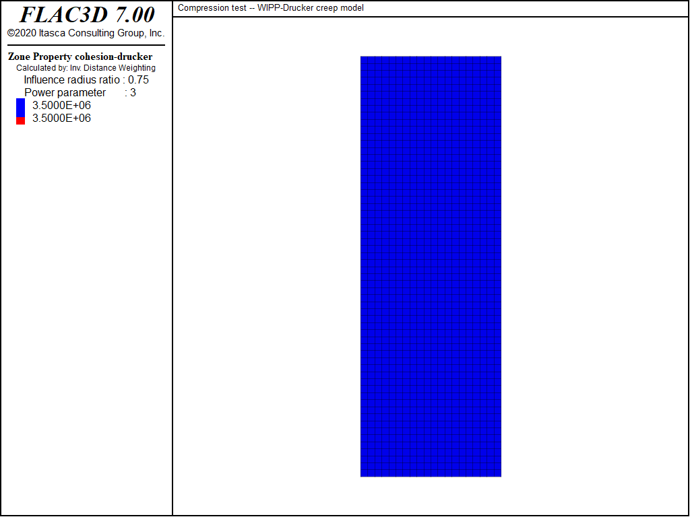
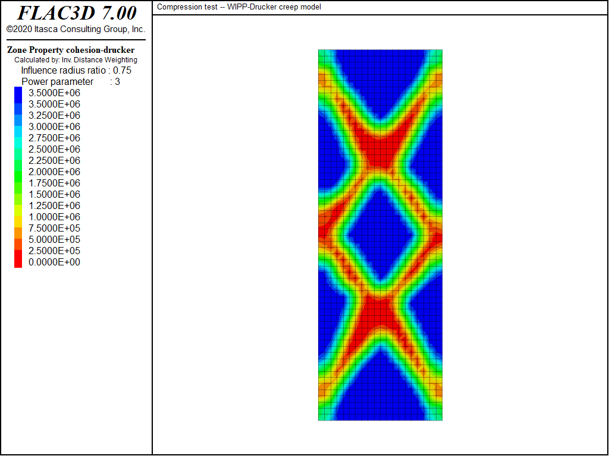

WIPP-Drucker 模型：显示局部化的压缩试验
注意
要在 FLAC3D 中查看此项目，请使用菜单命令 。 选择“Creep/CompressionWIPPDrucker”并选择“CompressionWIPPDrucker.f3dprj”以加载。 该项目的主数据文件见本示例末尾（main data files）。
使用粘塑性模型（WIPP-Drucker 模型（WIPP-Drucker model））进行压缩试验， 以证明在适当的加载速率下该模型能够模拟局部化。
该示例使 FLAC3D 对一个试样进行无侧限压缩试验，其中某一材料强度参数 （德鲁克黏聚力（cohesion-drucker））随塑性应变增加而降低。在低 应变率下，响应是单调的，试样均匀变形 （图 1（Figure 1））。如果在十倍速率下进行类似试验， 即使施加相同的边界位移，也会出现局部化。 图 2（Figure 2） 表明快速加载情况下形成了剪切带。两种加载速率试验的最大荷载几乎相同。但后一试验表现出整体软化行为。


图 1：慢速加载情况下强度参数 德鲁克黏聚力（cohesion-drucker） 的云图。


图 2：快速加载情况下强度参数 德鲁克黏聚力（cohesion-drucker） 的云图。
数据文件
;------------------------------------------------------------------
; 压缩试验——WIPP-Drucker 蠕变模型
;-------------------------------------------------------------------
model new
model large-strain off
fish automatic-create off
model title "Compression test -- WIPP-Drucker creep model"
model configure creep
;
zone create brick size 20 1 60
zone cmodel wipp-drucker
program call 'softening'
[global max_strength=3.5e6]
[global soft_rep=0]
zone gridpoint fix velocity-y
zone gridpoint fix velocity-x range position-z 0
zone gridpoint fix velocity-z range position-z 0
zone gridpoint fix velocity-x range position-z 60
zone gridpoint fix velocity-z range position-z 60
;
zone property density 2600 shear 12.4e9 bulk 20.7e9 tension 1e15 ...
friction-drucker 0.75 dilation-drucker 0.0 ...
cohesion-drucker [max_strength] ...
constant-gas 1.987 activation-energy 12e3 exponent 4.9 ...
constant-d 5.79e-36 constant-a 4.56 constant-b 127 ...
creep-rate-critical 5.39e-8 temperature 300
;
model history creep time-total
zone history displacement-z position 0,0,0
zone history stress-zz position 10,0.5,0
zone history stress-zz position 10,0.5,60
model save 'ini'
; --- 慢速试验
model restore 'ini'
model creep timestep fix 100
zone gridpoint initialize velocity-z 7.5e-8 grad 0 0 -2.5e-9
model cycle 5000
model save 'slow'
; --- 快速试验
model restore 'ini'
model creep timestep fix 10
zone gridpoint initialize velocity-z 7.5e-7 grad 0 0 -2.5e-8
model cycle 5000
model save 'fast'
⇐ WIPP-Drucker Model: Comparison with Drucker-Prager Model | WIPP-Salt Model: Hydrostatic Compression Test ⇒
| 这些内容对您有帮助吗？… 版权与免责声明 | FLAC3D © 2019, Itasca | 原文更新于 2020 年 10 月 8 日 |